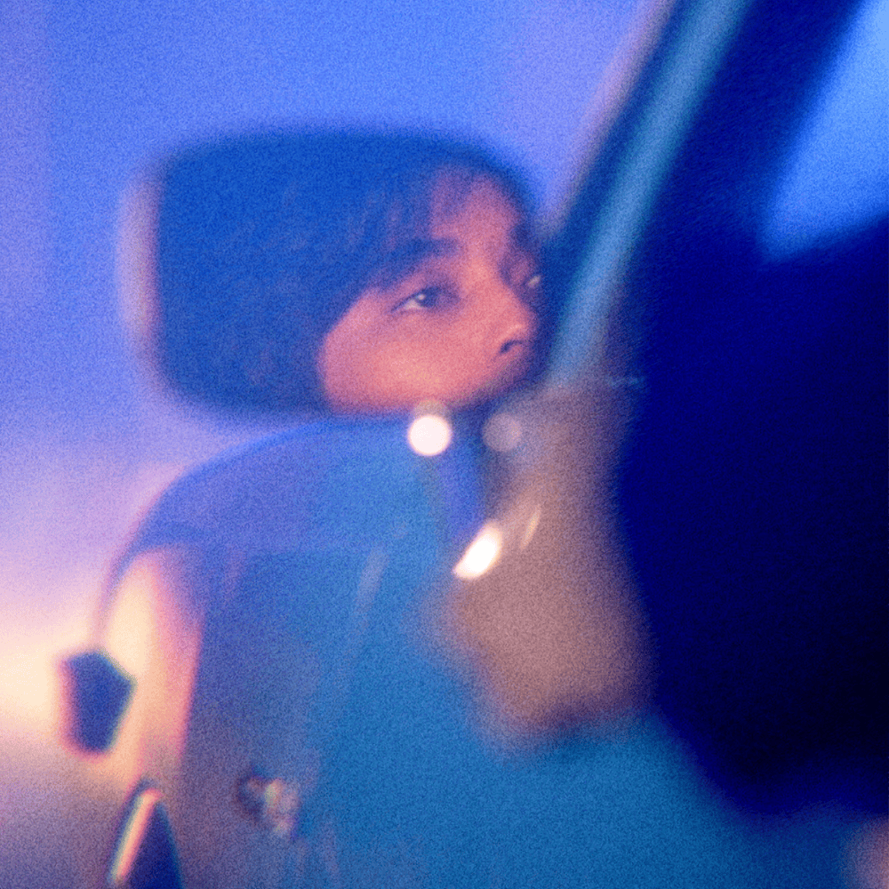

I demonstrate my musical intelligence through my appreciation of music and my ability to recognize and interpret its beauty and meaning. I enjoy listening to different songs, paying attention not only to their melodies and rhythms but also to the emotions, messages, and stories they convey. For me, music is more than just a collection of sounds; it is a form of expression that can communicate feelings and ideas that words alone sometimes cannot fully capture.
I also enjoy interpreting the songs I listen to, reflecting on their lyrics, and exploring the meanings behind them. Depending on the song, I may connect its message to personal experiences, relate to the emotions it expresses, or appreciate the deeper ideas it presents. Through this, I develop a greater appreciation for the creativity and thought that go into music. Although I may not necessarily be a musician myself, I believe that understanding and appreciating the emotional and artistic aspects of music is an important way I express my musical intelligence.